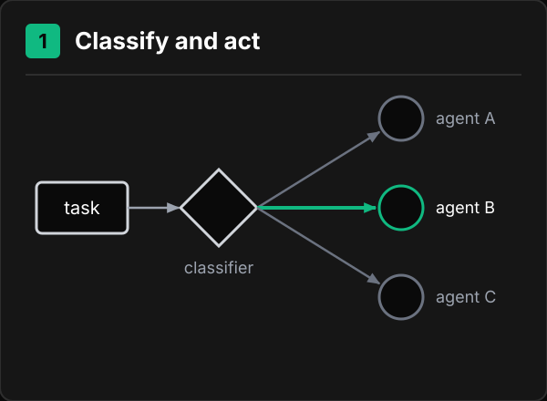
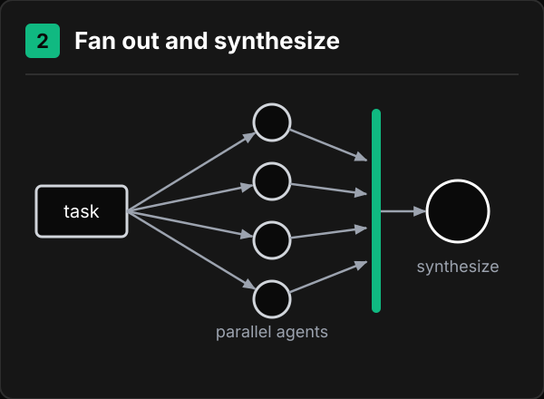
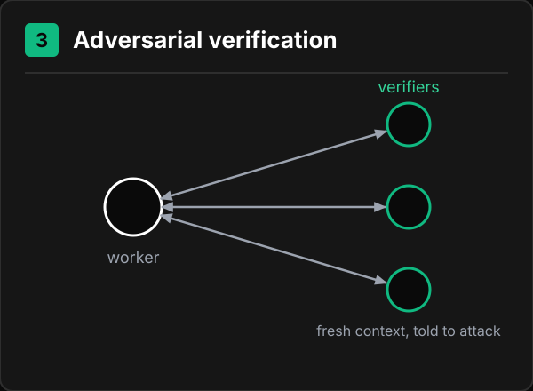
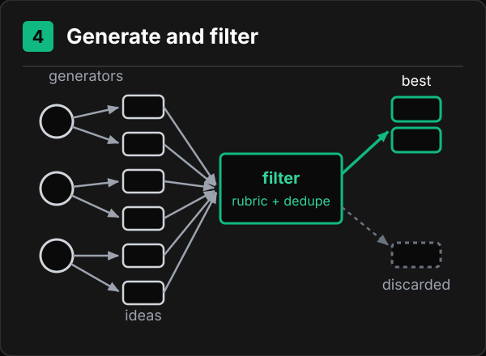
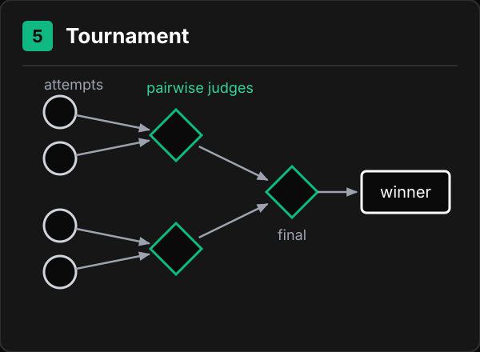
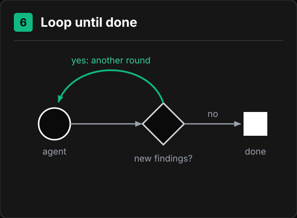

Workshop
The workshop is seven prompts: messages you paste to your coding agent, in order, plus an eighth to take home. They are at the bottom of this page, each with a Copy button. Above them: the design file, the plan of the workshop, and the ideas the prompts are built on.
After prompt 01 has created the project, make a folder named design inside the project folder and put turbine.fig in it. Not next to the project: Claude Code asks for permission before reading files outside the project folder.
Workshop plan
| Time | Part | What you do |
|---|---|---|
| 14:55 | Introduction | Listen. |
| 15:03 | Setup | Open a terminal in the turbine folder, start the agent, paste prompt 01. |
| 15:10 | Design | Put turbine.fig in design/. Plan mode, prompt 02: the agent plans and builds a decoder, npm run design, that writes the design data as JSON. Answer its open questions. |
| 15:25 | Checker, tests first | Plan mode, prompt 03: the agent writes npm run check from the design data before any page exists. The check fails. Demo: a failing check and its report. |
| 15:40 | Build | Plan mode, prompt 04: the agent builds the whole page and runs the check once. Review the page section by section. |
| 15:55 | Loop | Prompt 05: the agent fixes the page until the check passes. |
| 16:05 | Deploy | /clear, prompt 06: the page goes live and the check runs against the live address. |
| 16:12 | Review | /clear, prompt 07: an agent with a fresh context tries to break the page. You pick the real findings; it fixes them, the check still passes, and the page is deployed again. |
| 16:20 | Limits and questions | Listen, ask. |
Prompts 02 to 05 build on each other: the checker needs the design data, the page needs the checker. If a step does not finish in time, use the rescue pack below and go on. Prompt 08 is prompts 01 to 07 as one message, for use after the workshop.
Rescue packs
Two downloads made from a complete run of these prompts. Each replaces one step.
| If at | You do not have | Download | Then |
|---|---|---|---|
| RESCUE_TIME_1 | design/data from prompt 02 | design-data.zip | Tell the agent Unzip design-data.zip from my Downloads folder into this project, run npm install, and commit it. Then /clear and prompt 03. |
| RESCUE_TIME_2 | a working npm run check from prompt 03 | checker.zip | Tell the agent Unzip checker.zip from my Downloads folder into this project, run npm install, and commit it. Then /clear and prompt 04. |
How every step runs
Prompts 02, 03 and 04 each build something real: the decoder, the checker, the page. Each one runs the same way:
- Plan mode. Before you paste the prompt, switch the agent to plan mode: in Claude Code press
Shift+Tabuntil the footer shows plan mode on; in Codex type/plan. The agent researches and shows a plan. It cannot change files until you approve. - Implement. Read the plan, correct it in plain words, approve it. In Claude Code choose Yes, auto-accept edits: the agent then changes files without asking. The first time it runs a new kind of command (
npm run check,git push), choose Yes, and don't ask again. Before prompt 05, which has no plan, pressShift+Tabuntil the footer shows accept edits on (Codex:/permissions). - Commit. At the end of the step the agent commits its work with a message saying what the step did, and pushes it to your GitHub repository. To undo a step, tell the agent
Go back to the commit from step 03(or whichever step).
To stop the agent in the middle of a task, press Esc. Ctrl+C twice closes the agent; start it again with claude --continue or codex resume --last.
- Clear. Type
/clear(the same command in Claude Code and in Codex). The next prompt starts with an empty context and reads what it needs from files: the design data, the report andnotes.md.
Design data, not a picture
Prompt 02 does not decode the .fig once and throw the work away. The agent writes a small tool, npm run design, that reads the file and saves what the page and the checker need as JSON in design/data/: sections, colours, typography, layout, components, copy and images. Every later step reads those files. When the design changes, run npm run design again.
An agent given a screenshot infers every colour and measurement from pixels and gets them nearly right. Given the file, it reads #FF6A1A from the file.
Tests first
Test-driven development means writing the test before the code. In this workshop the test is npm run check, and prompt 03 writes it before the page exists:
- Red. The check is written from the design data and run against the empty project. It fails, and the report lists everything the page does not have yet.
- Green. Prompt 04 builds the page, and prompt 05 fixes it until the check passes.
A check written after the page tends to describe the page that exists. A check written first can only describe the design.
The loop

- Plan. The agent states what it will change and why. From the second round on, the plan starts from the report.
- Implement. The agent writes code. The first time it generates the page; after that it fixes what the report names.
- Verify. The check from prompt 03,
npm run check, builds the site, serves it itself, tests it in a real browser and exits with 0 (pass) or 1 (fail). On a fail it writes a report.
The loop ends when the check exits 0. Then the work is committed and the page is deployed.
Who checks the work

An agent can check work on two conditions: it did not do the work in the same context, and it is told to find problems, not to confirm the result.
| Who checks | What it is good for |
|---|---|
| The same agent, in the same context | Nothing. It repeats the reasoning that produced the work. |
A program: npm run check | Everything with an exact answer: sections, colours, copy, contrast, overflow. |
| Agents with a fresh context, told to attack (adversarial review) | What a program cannot measure: reading order, useless alt text, text over photos, copy that does not match the brand. |
Run the program and the review side by side. Failures and confirmed findings go into one report, and the page ships when that report is empty. In the workshop the page is deployed first, so everyone has an address. The review is prompt 07, in a new session, and its fixes are deployed again.
Levels of checking

- Deterministic checks. Build, console errors, sections, colours, copy, contrast, overflow. Same result on every run.
- Measured comparison. Screenshots compared with the design. Detects a change, does not judge it. The drawing shows the checker behind the finished site; the checker you write in prompt 03 covers level 1.
- Adversarial review. Agents with a fresh context look for what levels 1 and 2 cannot measure. Every finding must name an element and survive an attempt to refute it.
The failure report
The check writes every failure to a file. Example:
**3. [check 4] text is below the contrast minimum**
- Where: the supporting line inside each card in the lineup section
- Expected: the design's "text / secondary", at least 4.5:1 against the background
- Actual: the design's "text / muted", 4.07:1
- Hint: muted is defined for legal and footer text onlyEach failure has four fields: what failed, where, what the design expects, what the page has. In the next round the agent reads this file, not its memory of the previous round.
The agent must never edit the checker. If it can change the check, a pass means nothing.
Context and notes
A long session collects abandoned attempts and old reasoning. When the agent slows down or becomes vague, move the state into files and start a new session.
| Long session | New session |
|---|---|
| Holds every earlier attempt | Reads the report: the current failures |
| Repeats its own earlier reasoning | Reads notes.md: what was tried and what happened |
| Slows down | Reads design/data/: the design as JSON, written in prompt 02 |
Write what is left to do into notes.md, in ten lines: what you tried, what worked,
what did not, and why.Then type /clear and tell the agent to read notes.md and the report.
Loops and workflows

- Loop: plan, implement and verify, repeated until a condition holds. You define the exit condition. Prompt 05; in Claude Code also
/goal npm run check exits 0. - Workflow: phases in a fixed order, with a condition that must hold before the next phase starts. A phase can run several agents at the same time. You define the phases. Prompt 08.
A workflow can contain a loop: phase 05 of prompt 08 is the loop from prompt 05.
Workflow patterns
Six ways to arrange several agents inside a workflow. Prompt 08 uses three of them: fan out and synthesize (phase 04), loop until done (phase 05) and adversarial verification (phase 07).
1. Classify and act
{kind=link}

How it works: one agent reads the task and sends it to exactly one specialised agent.
When to use it: tasks of different kinds that need different instructions. Example: incoming bug reports routed to a design, a copy or an accessibility agent.
2. Fan out and synthesize
{kind=link}

How it works: the task is split into independent parts, one agent per part works in parallel, and a final step merges the results.
When to use it: parts that do not depend on each other. Example: phase 04 of prompt 08 builds every page section with its own agent and puts them together in order.
3. Adversarial verification
{kind=link}

How it works: one agent produces a result, several agents with a fresh context try to break it, and their findings go back to the first agent.
When to use it: anything a program cannot check. Example: prompt 07, and phase 07 of prompt 08.
4. Generate and filter
{kind=link}

How it works: several agents produce many candidates, and a filter with a rubric removes duplicates and weak candidates.
When to use it: you need options rather than one answer. Example: ten headline variants for the hero, of which three reach the designer.
5. Tournament
{kind=link}

How it works: judge agents compare candidates in pairs, and winners advance until one is left.
When to use it: choosing between complete attempts when there is no numeric score. Example: four versions of the lineup section, compared two at a time.
6. Loop until done
{kind=link}

How it works: an agent works, a check asks whether anything new was found, and a new round starts until nothing is.
When to use it: repairing until a check passes, or reviewing until a round finds nothing new. Example: prompt 05.
Deploy and check the live page
Prompt 06 runs these for you; do not type them yourself. The first deploy creates the site: netlify deploy --prod --dir=dist --site-name turbine-<your GitHub name>. Later deploys go to the same site.
After deploying, compare the served page with the files in dist, and run npm run check -- --url <address> against the live address. A passing local check does not prove the live page is the same: a stale build, the wrong folder or markup added by the host can change it. Prompt 06 does both steps.
Limits of automated checks
- Automated accessibility rules cover about 30 to 40% of WCAG. A pass means no known defect, not an accessible page.
- axe does not evaluate text over images or gradients. It marks those pairs incomplete, and a check whose rule is "zero violations" treats incomplete as a pass. Your checker must measure those pairs from the rendered pixels, and fail if it cannot measure them.
- A screenshot comparison detects a change. It does not say whether the change is better.
- No check here evaluates whether the design itself is good.
Common failures
| Symptom | Cause | Fix |
|---|---|---|
| The check turns green and nothing was fixed | The agent edited the check | Restore the check, then read the diff |
| Two wrong states, alternating | Two requirements that cannot both be true | Stop the loop. The contradiction is in the design or the brief |
| It keeps working after the task is done | Nothing runs the check first | Run the check before every fix |
| It gets slower and vaguer | The context is full | Write the state to notes.md, start a new session |
| "It works now" and it does not | The agent reports instead of measuring | Trust only the exit code of npm run check |
| Nothing happens for a long time | A step waits for input with no time limit | Give every step a time limit |
After the workshop
Start with one check, not a whole page:
- Choose a check your team does by hand.
- Turn it into a program that exits with 0 or 1.
- Write its output to a file an agent can read.
- Only then put an agent in front of it.
The prompts
Paste them in order, one at a time, and type /clear after each. Prompts 02 to 05 build on each other; if one does not finish in time, use its rescue pack from the table above.
Paste each prompt whole. The rules inside a prompt matter as much as the request.
Prompt 01
Start
Creates an Astro and Tailwind project in the repository folder, starts the development server, and commits the project to your GitHub repository. No pages and no content yet.
Before you paste
Open a terminal, go into your project folder and start your agent:
cd turbine
claudeWith Codex, type codex instead of claude. If cd turbine says there is no such folder, type ls and look for turbine in the list.
Esc stops the agent mid-task. Ctrl+C twice closes it; start it again with claude --continue or codex resume --last.
Set up a new website project in this folder.
Use Astro with Tailwind CSS. Static output — no React, Vue or Svelte, no server, no
database. Node is already installed.
Then start the development server and tell me the address to open in my browser.
Do not build any pages yet. Do not invent any content. The design comes next, and I want
the page to still be empty when it does.
While you work, tell me in one line what each command is doing. I have not used a terminal
before and I would like to follow along.
Then commit everything with a message that says what this step did, and push. Tell me the
step is done, so I can clear the session.Expected result. A few minutes of installing, then a line like Local http://localhost:4321/. That address shows Astro's placeholder page. The agent keeps the server running. Then it commits the project and pushes it: the commit is visible in your repository on github.com.
The agent asks before it runs a command. Choose the option that allows this kind of command without asking again. Codex also asks whether it trusts the folder. Answer yes.
After this prompt: type /clear and press Enter. /clear ends the conversation and starts a new one with an empty context, in Claude Code and in Codex. Nothing is lost: the next prompt reads what it needs from the files in the project.
If something goes wrong
| What you see | Say this |
|---|---|
| It starts building a landing page | Press Esc, then say Stop. Undo the pages you created. I want an empty project until I give you the design. |
| It asks before a command | Choose the option that allows this kind of command without asking again. |
Not inside a trusted directory | Codex is asking for permission. Answer yes. |
| Codex asks to use the network | Answer yes. Installing packages and pushing need it. |
command not found: npm | Node is not installed. Go back to the Preparation page. |
| It asks you to choose a template | Pick the minimal or empty template. No example content. |
| "The directory is not empty" | Something other than git's files is in the folder, for example the design folder. Move it out, run this prompt, put it back before prompt 02. |
| No output for two minutes | It is installing. Wait up to five minutes. |
git push fails or asks for a password | Run gh auth status in a new terminal window (any folder). If it is not signed in, repeat Sign in from the Preparation page, then say Push again. |
Why it is written this way
- "Do not build any pages yet": without it, the agent invents a hero, a feature grid and testimonials before it has seen the design.
- A commit at the end of every step: each step is saved in the repository, and any later step can be undone back to it.
/clearbetween steps: every prompt starts with an empty context and reads the state from files, not from a long conversation.
Prompt 02
Look at the design
The agent plans and builds a decoder for the Figma file: a script in the project, run with npm run design, that writes the design as JSON into design/data. Every later step, and the checker, reads that data. No page code yet.
Before you paste
- On the workshop page, click Download turbine.fig.
- Put the file in a folder named
designinside the project. Easiest: tell the agentMove turbine.fig from my Downloads folder into a new folder called design in this project.It must be inside the project: Claude Code asks for permission before it reads files outside the project folder. - Switch to plan mode. In plan mode the agent researches and shows a plan, and changes no file until you approve it. Claude Code: press
Shift+Tabuntil the footer shows plan mode on. Codex: type/planand press Enter.
You are not expected to understand the whole plan. Check three things: it is a script that npm run design runs, it writes JSON files into design/data, it writes no page code. Then approve. In Claude Code, choose Yes, auto-accept edits, so the agent does not ask before every file change.
Plan first. Research what you need, then show me a plan and wait for my approval. Do not
create or change any file until I approve it.
Inside this project there is a folder called design with a .fig file in it. That is the
Figma file itself, as Figma saves it. It is not a picture: it is the whole
design as data — every text, colour, variable, component and photo.
Work from that one file and nothing else. Do not search this computer for the design, a
specification, reference images or anything else about this project: there is nothing else,
and whatever you find is not the design. If the file names something it does not contain,
put it under point 6 instead of going to look for it.
What I want is a tool, not a one-off decode: a script in this project that reads the .fig in
design and writes the design data that the page and the checker will need. Make
"npm run design" run it. Running it again on a new .fig must refresh the data, so that nobody
has to decode or export the design by hand again.
Keep the decoder small: one script, no test suite for the decoder, no extra tooling. Stop
working on it as soon as the seven JSON files and the images are written.
There is no program that opens a .fig, so the script decodes it itself. What is known about
the format:
- A .fig is a zip. The design is in canvas.fig inside it. thumbnail.png is only a small
preview picture: do not work from it.
- canvas.fig starts with the bytes "fig-kiwi" and a version number, then chunks, each
prefixed with its length. The first chunk is a schema in the kiwi binary format
(github.com/evanw/kiwi); the second is the document, encoded with that schema. Each
chunk is compressed, with raw deflate or with zstd.
- The images folder inside the zip holds the photos, named by the hash the fills use.
- Skip anything marked isSoftDeleted, and anything that belongs to something marked so.
It was deleted in Figma and is still in the file. A variable inside a deleted collection
is not marked itself — skip it too.
- Text inside a component can come from component properties and overrides. If every
card of the same kind shows the same words, you are reading the component rather than
the instances. Resolve that before you trust any copy.
The script may use a package; the network is available. Do not write any page code.
The script writes JSON files into design/data, and the photos into design/images:
- design/data/sections.json: every section, in the order they appear down the page, and
what is in each one
- design/data/colours.json: every colour, by its name in the design, with its exact value
and where it is used
- design/data/typography.json: every text style, with font, size, weight, line height and
letter spacing, and where each one is used
- design/data/layout.json: every width the design covers, and the spacing, sizes, corner
radii and columns at each width
- design/data/components.json: every component, with its variants and states
- design/data/copy.json: every piece of text, section by section, word for word, including
alt text and labels that no frame shows
- design/data/images.json: every image, with its file in design/images, where it is used,
its size and its alt text
Every value is copied exactly as the file has it: no rounding, no renaming. From now on
design/data is the design. Every later step reads it instead of the .fig, and the checker
tests the page against it. If a value turns out to be missing, the fix goes into the script,
and then npm run design runs again.
Your plan must say how the script reads the file, which package it uses if any, and the
shape of each JSON file.
After I approve the plan, write the script, run npm run design, then show me a list and
write point 6 of it into notes.md:
1. Every section, in the order they appear down the page, and the name on every artist card.
2. Every colour, by its name from the design, with its exact value.
3. Every text size, and which one is used where.
4. Every width the design covers.
5. Each file in design/data, and what is in it, one line each.
6. Anything the file disagrees with itself about, or does not tell you, and that you would
otherwise have to guess.
Point 6 is the one I care about most. Be specific and be honest: "the file shows a hover
state I have no values for" is more useful to me than a confident guess.
Then stop and wait for me to answer point 6.
When I have answered point 6, write my answers into notes.md. Then commit everything with a
message that says what this step did, and push. Tell me the step is done, so I can clear the
session.Expected result. First, a plan: how the script reads the file, which package it uses and the shape of each JSON file. Read it, then correct it in plain words or approve it. Then the agent writes and runs the decoder. This can take longer than the workshop allows: at RESCUE_TIME_1, anyone who does not have design/data yet takes the rescue pack (the last row of the table below). At the end npm run design exists, design/data holds seven JSON files, design/images holds the photos, and the chat shows a six-point list.
Check two things in the list:
- Point 1 matches the design: twelve artist cards with twelve different names, not a generic landing page.
- Point 6 is not empty. Answer with names from the design, for example a colour or text style name from point 2, not with new values. If point 6 is empty, ask
which of those did you read, and which did you infer?
For anything you cannot answer that way, paste:
For anything I have not answered: pick the likeliest reading, write it into notes.md as an
assumption, and carry on.After your answers the agent commits and pushes.
After this prompt: type /clear.
If something goes wrong
| What you see | Say this |
|---|---|
| It writes code before showing a plan | Press Esc, then say Stop. Show me the plan first and wait for my approval. |
| It decodes the file once and writes no script | I asked for a tool. Put the decoding in a script, make npm run design run it, and run it. |
| It writes tests or extra tooling for the decoder | Keep the decoder to one script. No tests for it. Write the seven JSON files and the images, then stop. |
| A JSON file is missing values | design/data/typography.json has no line heights. Fix the script so it reads them, and run npm run design again. |
| It starts building the page | Press Esc, then say Stop. No page code in this step. Undo anything you wrote for the page. |
| It asks to read a file outside the folder | The .fig is beside the project, not in it. Move it into design inside the project and say It is in design now. |
| It searches your disk, or reads another project | Press Esc, then say Stop. The design is the .fig in design and nothing else. Do not use anything you found outside this project. |
| "I cannot open binary files" | It is a zip. The script must unzip it and decode canvas.fig as described in my last message. |
| It describes a small, blurry page | It read thumbnail.png. That is the preview picture. Work from canvas.fig. |
zstd is not supported, or decompression fails | Node is older than 22.15. Use a package that reads zstd and carry on. |
| Codex asks to use the network | Answer yes. Installing a package needs it. |
| Claude Code asks before every command | Answer yes and pick the option that stops asking for that kind of command. |
| Every artist card has the same name | You are reading the component, not the instances. Resolve the component properties and overrides in the script. |
| Colours come back as "a dark grey" | Give me exact values. If the script cannot read exact values, say so. |
git push fails | Run gh auth status in a new terminal window (any folder). If it is not signed in, repeat Sign in from the Preparation page, then say Push again. |
It is RESCUE_TIME_1 and you do not have design/data | Press Esc. If the footer says plan mode, press Shift+Tab until it does not (Codex: leave /plan with /plan again or Esc). Download design-data.zip from the workshop page and tell the agent: Unzip design-data.zip from my Downloads folder into this project, follow RESCUE.md inside it, and commit. Then /clear and prompt 03. In a Codespace, drag the zip from your computer into the file list on the left, then say Unzip design-data.zip in this project, follow RESCUE.md inside it, and commit. |
Why it is written this way
- Plan first: a wrong approach to the file costs one sentence to correct before the script exists.
- A script, not a one-off decode: a new version of the
.figis onenpm run designaway, and the page and the checker read the same JSON. - Point 6: the list of things the file does not specify is the part of the brief nobody wrote.
Prompt 03
Write the checker first
The agent writes npm run check: a program that tests the page in a real browser against design/data and writes a report file. It writes it before the page exists.
Writing the test before the code is called test-driven development. The check comes first and fails, because there is nothing to check yet. Prompt 04 then builds the page, and prompt 05 fixes it until the check passes.
Before you paste
Switch to plan mode, as before prompt 02. Claude Code: Shift+Tab until the footer shows plan mode on. Codex: /plan. When you approve the plan in Claude Code, choose Yes, auto-accept edits.
Plan first. Research what you need, then show me a plan and wait for my approval. Do not
create or change any file until I approve it.
Now write a program that checks the page against the design, before the page exists.
It must be a program, not an opinion. It runs, it looks at the real page in a real
browser, and it exits with code 0 if everything is right and a non-zero code if anything
is wrong. It never asks a language model anything, it never asks me anything, and it
gives the same answer twice on the same page.
Make "npm run check" run it. Install whatever you need to drive a real browser and to
test accessibility. These are tools for checking; none of them goes into the page.
By default it builds the site and serves the built files itself, and checks that page. It
must not depend on a development server someone else started. It must also take an address —
npm run check -- --url https://… — and run the same checks against that page instead, so
that later it can judge the live site too.
Derive what to check from design/data, not from me. There is no page to look at yet: every
check comes from the design. At minimum it must decide, against the page as a browser
actually renders it rather than against the source:
1. that the project builds, with no errors
2. that loading the page produces no errors in the browser console
3. that every section the design defines is present, and in the order the design gives
4. that it is accessible, at every width the design specifies
5. that every colour the page paints is one the design defines — anything else fails
6. that every piece of copy in the design appears on the page
7. that nothing overflows sideways at the narrowest width the design specifies
8. that every image has alt text, and that it is not the filename
When something fails, the report must say four things: what failed, where on the page,
what the design says it should be, and what was actually there. "Contrast issue on the
page" is useless. Naming the element, the expected value, the measured value and the
threshold is the whole job.
Write the report to a file as well as printing it, because later I am going to hand that
file straight back to you. Tell me what you called it.
Three rules about the checker itself:
- If a check cannot run — the browser will not start, the page will not load,
design/data is missing — that is a FAILURE, never a pass and never a silent skip. A
check that did not happen must not look like a check that succeeded.
- An accessibility result marked incomplete, such as text over a photo or a gradient, is
not a pass. Measure the contrast from the rendered pixels behind that text, and fail only
if the measured ratio is below the threshold, or if it cannot be measured.
- Do not make the checks lenient so that they pass.
Your plan must list each check, what it reads from design/data, and how it measures.
There is no page yet. When the checker is written, run it now against the project as it is:
it must fail, and the report must say why. A check that passes on an empty page is not
checking anything.
Then commit everything with a message that says what this step did, and push. Tell me the
step is done, so I can clear the session.Expected result. First, a plan: the checks, what each reads from design/data, how it measures, which tools it installs and the name of the report file. Approve it or correct it. Then the checker is written and run against the empty project. It fails, and the report says why for each check: sections missing, copy missing, and so on. Then a commit, pushed.
How to tell a checker that fails on purpose from a broken one:
- Working: a report file exists and lists each check with where, expected and actual.
- Broken: an error with file paths and line numbers, and no report file.
After this prompt: type /clear.
If something goes wrong
| What you see | Say this |
|---|---|
| It writes code before showing a plan | Press Esc, then say Stop. Show me the plan first and wait for my approval. |
| It passes on the empty project | It passed with no page. Show me which checks ran and what each one measured. |
| It wants to build a page first, so the check has something to test | No page in this step. The check must fail on the project as it is. |
| A check is skipped | A check that cannot run is a failure. Make it fail and say why it could not run. |
| A contrast result is marked incomplete (text over a photo or gradient) | Measure that contrast from the rendered pixels behind the text. Fail only if the ratio is below the threshold or it cannot be measured. |
| The report says "contrast issue" with no details | Every failure needs the element, the expected value, the measured value and the threshold. |
| It takes values from its own idea of the design | Every check reads its values from design/data. Show me where each one comes from. |
| It asks which testing library to use | Your choice. Pick one that drives a real browser and tests accessibility. |
| Codex asks to use the network | Answer yes. Installing the browser and the accessibility tools needs it. |
| The report says the page will not load | The checker must build the site and serve it itself. Do not rely on a development server. |
npm run check -- --url https://example.com does nothing different | The checker must accept --url and run the same checks against that address. |
| It is RESCUE_TIME_2 and the checker is broken (an error, no report file) | Press Esc. If the footer says plan mode, press Shift+Tab until it does not (Codex: leave /plan with /plan again or Esc). Download checker.zip from the workshop page and tell the agent: Unzip checker.zip from my Downloads folder into this project, follow RESCUE.md inside it, and commit. It contains its own design/data, which replaces yours. Then /clear and prompt 04. In a Codespace, drag the zip from your computer into the file list on the left, then say Unzip checker.zip in this project, follow RESCUE.md inside it, and commit. |
Why it is written this way
- Tests first: the check is written from the design before any page exists, so it cannot be shaped to fit what was built.
- A program, not an opinion: exit code 0 or not, the same answer on every run, no language model involved.
- An incomplete result is not a pass: accessibility tools report text over a photo or gradient as "incomplete". The checker measures the rendered pixels behind that text, and fails only when the ratio is too low or cannot be measured; otherwise a rule of "zero violations" would pass it unseen, or a rule of "incomplete fails" would never let the page pass.
Prompt 04
Build it
The agent plans the page, builds all of it from design/data in one run, then runs the checker from prompt 03 once and shows what still fails. Then you review the page and the agent writes your review into notes.md before it commits.
Before you paste
Switch to plan mode, as before prompts 02 and 03. Claude Code: Shift+Tab until the footer shows plan mode on. Codex: /plan.
So that the agent does not ask before every file change: in Claude Code, choose Yes, auto-accept edits when you approve the plan; the footer then shows accept edits on. Accept edits covers file changes only. The first time the agent runs a new kind of command, such as npm run check, git commit or git push, Claude Code still asks: choose Yes, and don't ask again for … commands. In Codex, type /permissions and choose the option that lets it edit files and run commands in this folder without asking; git push may still ask for the network.
Plan first. Research what you need, then show me a plan and wait for my approval. Do not
create or change any file until I approve it.
Build the page now, from the design. Read design/data and notes.md; do not decode the .fig
again.
Your plan must list the sections in the order of design/data/sections.json, and say which
colours, text styles, layout values, copy and images each one uses.
Build the whole page in one go: every section in design/data/sections.json, in that order. Do
not stop between sections to ask me. When it is done, tell me which sections you built, one
line each, and the address to open.
If you need to see the page in a browser and the development server is not running, start it
yourself and give me the address.
Rules, all of them non-negotiable:
- Every colour and every size comes from design/data. If a value you need is not there,
check whether the script behind npm run design misses it; if it does, fix the script and
run it again. If the design does not have it, do not choose one: it is a question for
notes.md, below.
- Every word comes from design/data/copy.json. Do not write copy. Do not improve copy. If a
piece of text seems to be missing, write that into notes.md; do not fill the gap.
- Every photo comes from the design: use the images design/data/images.json lists, never a
placeholder.
- Nothing new goes into the page itself: no UI framework, no component library, no font or
icon service. The page is made of Astro and Tailwind.
- The page must work with images that have not loaded and with JavaScript switched off.
Anything clever is an addition on top of something that already works without it.
If the design does not tell you something, do not guess. Write the question into notes.md,
pick the reading you think is likeliest, tell me both, and carry on. I would rather correct
one assumption than discover six.
When the page is built, run npm run check once and show me how many checks fail and which.
Do not fix them yet, and do not change the checker.
Then wait while I review the page. When I tell you my review, write it into notes.md under
"Design review", and do not fix anything yet. Then commit everything with a message that says
what this step did, and push. Tell me the step is done, so I can clear the session.Expected result. First, a plan: the sections in order and what each uses from design/data. Approve it or correct it. Then a few minutes of work, the list of sections it built and the address. Then one run of npm run check: fewer failures than after prompt 03, usually not zero. Then the agent waits for your review.
Open the page beside the design in Figma and review it one section at a time. No Figma account, or it asks you to sign in? Compare with the finished site linked from the home page. Type each problem in plain words, for example The gap under the heading is too tight, and the orange is the wrong orange., then paste this line after them:
Write these problems into notes.md under "Design review". Do not fix them yet.The agent writes your review into notes.md, commits and pushes. Prompt 05 fixes what the design data supports.
After this prompt: type /clear.
If something goes wrong
| What you see | Say this |
|---|---|
| It writes code before showing a plan | Press Esc, then say Stop. Show me the plan first and wait for my approval. |
| It stops after one section and asks | Do not wait for me. Build the whole page, then show me. |
| It starts fixing the failures | Press Esc, then say Stop. Run the check once and show me the result. Fixing is the next step. |
| It starts fixing your review | Press Esc, then say Stop. Only write my review into notes.md. Fixing is the next step. |
| It changes the checker | Put the checker back exactly as it was. The page changes, the checker does not. |
| It asks before a command | Choose Yes, and don't ask again for … commands. |
| Text you have never seen before | Where did that sentence come from? Replace it with the text in design/data/copy.json. |
| A grey box where a photo should be | Use the image design/data/images.json lists for that. |
| A colour that is nearly right | That is not the value in design/data/colours.json. Use the exact one and tell me its name. |
| It starts decoding the .fig again | Press Esc, then say Stop. Everything you need is in design/data and notes.md. |
| It says it is done and it clearly is not | Which sections have you built, and which are still missing? List both. |
| It gets slower and vaguer | The context is full. Say Update notes.md with where we are, type /clear, then say Read design/data and notes.md and continue building. |
| It is BUILD_END and the page is not finished | Press Esc, then say Stop. Commit what you have and push. Then /clear and prompt 05. |
Why it is written this way
- Every value comes from
design/data: a value the agent picks itself is one the checker reports. - The check runs once and nothing is fixed: fixing is prompt 05, in a new session, in a loop.
- Your review goes into
notes.mdbefore the commit:/clearempties the conversation, and prompt 05 reads the review from the file.
Prompt 05
The loop
In a new session, the agent runs the checker from prompt 03 (npm run check), reads the report file it writes, fixes the first failure and runs the checker again, until it exits 0. It also fixes the problems from your review in notes.md that the design data supports. Each round has three steps: plan the fix, make it, run the checker. When the check passes, the agent commits and pushes.
Before you paste
Type /clear. So that the agent does not stop before every file change: in Claude Code, press Shift+Tab until the footer shows accept edits on. Accept edits covers file changes only: the first time the agent runs a new kind of command, such as npm run check, git commit or git push, Claude Code still asks, so choose Yes, and don't ask again for … commands. In Codex, type /permissions and choose the option that lets it edit files and run commands in this folder without asking; git push may still ask for the network.
Read notes.md. Then run npm run check.
The items under "Design review" in notes.md are problems I found by looking at the page.
Treat the ones that design/data supports like failures in the report and fix them too. For
each one design/data does not support, write one line into notes.md saying so, and leave it.
If npm run check exits 0 and no Design review item that design/data supports is left, commit
everything with a message that says the check passes, push, and tell me we are finished.
Otherwise, read the report the check wrote and fix what it names. Then run npm run check
again. Repeat until it exits 0 and the Design review items are done.
Each round has three steps. Plan: take the first failure in the report and write one line
into notes.md: the failure, what you think causes it, and what you will change. Implement:
make that change. Verify: run npm run check.
Work in the order the report lists things. Fix the cause, not the symptom: if a colour is
wrong, use the one from the design, do not nudge it until the number moves. Make the
smallest change that clears each failure, and leave alone anything that was already
passing.
Three rules, and the first one matters more than the other two:
1. NEVER change the checker to make a check pass. Not a threshold, not a skipped assertion,
not a rule switched off. If you genuinely believe a check is wrong, STOP, tell me which
one and why, and change nothing.
2. Do not add anything the design does not have, and do not invent text.
3. If the same failure survives three attempts, stop and tell me what you tried each time
and what happened. Three failed repairs usually means the design is asking for two
things that cannot both be true, and no fourth attempt will resolve that.
Write what you tried and what happened into notes.md as you go, so that a fresh session
could pick this up. Keep going on your own. Do not ask me to confirm each round./goal
Paste the prompt above first, then this line:
/goal npm run check exits 0In Claude Code, /goal sets a condition. After each turn a separate model checks whether the condition is met, and Claude keeps working until it is. The agent therefore has to run npm run check and show the exit code in the conversation. Codex has /goal too: the same line sets it, and /goal clear removes it. Without /goal the prompt alone keeps the loop going; if the agent stops early, say Keep going.
Expected result. Several rounds of plan, fix, check. The number of failures goes down, can rise by one when a fix breaks something else, and goes down again. notes.md gets one line per round. When npm run check exits 0, the agent commits and pushes.
After this prompt: type /clear.
If something goes wrong
| What you see | Say this |
|---|---|
| It edited the checker | Put the checker back exactly as it was, and fix the page instead. Then look at what it changed in the checker. |
You need to stop /goal early | Type /goal clear. |
| It asks before every file change | Claude Code: Shift+Tab until the footer shows accept edits on. Codex: /permissions. |
| It asks before a command | Choose Yes, and don't ask again for … commands. |
| It stops after one round | Keep going. Do not stop until npm run check exits 0. Or use /goal. |
| The same failure keeps coming back | You have tried that three times. Stop. Tell me what you tried and what happened each time. |
| It says it is done but the check is red | Run npm run check and paste the last five lines, unedited. |
| It gets slower and vaguer | The context is full. Say Write what is left into notes.md in ten lines, type /clear, then paste this prompt again. |
| It is LOOP_END and the check still fails | Press Esc (and type /goal clear if you used /goal), then say Stop. Write where you are into notes.md, commit and push. Then /clear and prompt 06. |
Why it is written this way
- The agent may never edit the checker. If it could, a pass would mean nothing.
- One line per round in
notes.md, and the report on disk: a new session continues from the files. - Three failed attempts at one failure means stop: usually two requirements that cannot both be true.
Prompt 06
Ship it
In a new session, the agent builds the site, creates a Netlify site and deploys to it without interactive questions, checks the live address with the same checker, and commits and pushes anything that changed.
Before you paste
Type /clear, if you have not already.
Put this on the internet.
Build the site, then deploy it to Netlify with the Netlify command line. It is installed and
I am signed in; if it says I am not, tell me what to do rather than doing it silently.
This project has no Netlify site yet. Create it and deploy in one command, without
interactive questions: netlify deploy --prod --dir=dist --site-name turbine-<my GitHub
username>. Find my username with gh api user --jq .login. If that name is taken, add a
short suffix and run it again.
When it is live, do not just tell me it worked. Check:
- fetch the public URL and confirm it returns 200
- confirm the page it serves is the page you just built, not an older one — compare what
comes back against what is in the dist folder
- run npm run check -- --url against the live URL, and show me the result
Write the site name and the live address into notes.md. Then commit anything that changed
with a message that says what this step did, and push.
Then give me the URL on its own line so I can copy it.Expected result. No questions from the Netlify CLI: --site-name creates the site and deploys to it. The address looks like https://turbine-yourname.netlify.app. The agent then reports three checks: the address returns 200, the served page matches dist, and npm run check -- --url passes against the live address. It writes the site name into notes.md, and commits and pushes anything that changed, for example the Netlify settings it created. The address comes last, on its own line.
After this prompt: type /clear.
If something goes wrong
| What you see | Say this |
|---|---|
| It says you are not logged in | Run netlify login in a new terminal window (any folder), as on the Preparation page, then say I am logged in now. |
| Codex asks to use the network | Answer yes. Deploying and fetching the live address need it. |
| The Netlify CLI asks a question and waits | Press Esc, then say Stop that command. Deploy with --site-name so it does not ask anything. |
| The site name is taken | Add a short suffix to the site name and deploy again. |
| The CLI keeps failing | Say Open this project folder for me. Drag the dist folder onto https://app.netlify.com/drop and claim the site when Netlify offers it. Then say Link this folder to my Netlify site <name> with netlify link --name <name>, write the site name into notes.md, and run npm run check -- --url against its address. |
| A blank page at the live address | The live page is blank. Which folder did you deploy? |
| No styles on the live page | Deploy the dist folder, not the project root. |
| "Deployed successfully" and no address | Give me the public address on its own line. |
| The live check fails where the local one passed | Show me exactly which checks differ between local and live, and why. Do not change the checker. |
| It says the checker cannot take an address | Prompt 03 asked for --url. Add it without changing what any check decides, then run it against the live address. |
Why it is written this way
--site-namecreates the site in the same command: an agent cannot answer an interactive question in the terminal, and a waiting command waits for ever.- A successful deploy says nothing about what is served. The agent compares the live page with
dist, content and not bytes, because Netlify adds its own tags to the HTML. - The site name goes into
notes.md: prompt 07 deploys again to the same site after/clear.
Prompt 07
Try to break it
A review of the page by an agent that did not build it. The agent looks for problems the checker from prompt 03 cannot catch, argues against each one, and reports only those that survive. You choose which to fix; the agent fixes them, runs npm run check again, commits, pushes and deploys again to the site from prompt 06. The review adds to npm run check; it does not replace it.
The page is already live after prompt 06. If time runs out, skip this prompt: the address you have stays.
Before you paste
Type /clear, so the reviewer has not seen the page being built. An agent asked to grade its own work in the same session remembers its reasons for every decision and defends them; that is not a review. The page is reviewed on this machine; the agent starts the development server if it is not running.
Whatever npm run check says right now, try to prove the page is wrong.
You did not build this page. Judge it only by what a browser shows and what is in this
project, not by anything said earlier in this conversation.
Look at the page on this machine. If the development server is not running, start it yourself
and give me the address.
Your job now is to attack, not to defend and not to fix. Find five things that
are wrong with this page that the checker in this project cannot catch, and for each one
tell me:
- exactly which element, by what I would see on screen
- what is wrong with it
- why the checker missed it — what question does it ask that this slips past?
Look specifically where an automated check has no reach:
- text over a photograph or a gradient: an accessibility tool cannot compute that pair and
marks it incomplete; the checker in this project may measure it from the pixels, so look
at what it actually measured there
- reading order for someone using a keyboard or a screen reader: technically valid and
incoherent is a thing that exists
- alt text that is present, and useless
- a heading structure that looks like a hierarchy and is not one
- copy that passes every rule and still does not sound like the brand
- what happens at a width between the ones the design specifies — one nobody screenshotted
- anything that only breaks on the second visit, or with a slow connection
Before you tell me any of them, argue against each one yourself, from three angles:
is it true - go and look again, do not trust your first reading
does it matter - would a visitor notice, or only a checklist?
is it handled - is it already covered somewhere I have not looked?
Report only the findings that survive all three. Default to discarding when you are
unsure, and tell me how many you threw away. Four real findings beat five with a guess in
them. If you cannot point at a specific element, it is not a finding.
Do not fix anything yet. I want to decide which of these are real first.Expected result. Up to five findings, each with the element, the problem and why the checker missed it, plus the number of candidates the agent discarded. Decide which findings are real. Then type Fix findings and the numbers you chose, press Shift+Enter for a new line, and paste the block below:
Fix only the findings I listed above. Leave the rest. Then run npm run check again: I want
to know if fixing them broke anything that was passing. If it exits 0, commit everything
with a message that says which findings were fixed, and push. If it exits non-zero, tell me
which failures are new since your fixes, then commit and push anyway. Then deploy again to
the same site with netlify deploy --prod --dir=dist --site <the site name in notes.md>, and
run npm run check -- --url against the live address.The agent fixes the chosen findings, runs the check, commits and pushes, deploys again to the site from prompt 06 and runs the check against the live address.
After this prompt: type /clear.
If something goes wrong
| What you see | Say this |
|---|---|
| A finding with no specific element | Name the element as I would see it on screen, or drop the finding. |
| Five findings and nothing discarded | How many candidates did you discard, and why? If arguing against the findings removed none, it did not really happen. |
| It starts fixing before you chose | Press Esc, then say Stop. No fixes yet. I decide which findings are real first. |
| It mentions decisions made while building | The session was not cleared. Type /clear and paste the prompt again. |
| The development server is not running | Start the development server yourself and give me the address. |
| A fix makes a check fail that passed before | That fix broke a check that passed before. Undo that fix, tell me why it broke the check, and do not change the checker. |
| It cannot find the site name | The site name from prompt 06 is in notes.md. If it is not there, run netlify status and use that site. |
Why it is written this way
- A new session: a reviewer that did not build the page has nothing to defend.
- Find, then argue against each finding from three angles (is it true, does it matter, is it handled): you get what survives, not everything that was found.
- It looks where a program cannot: text over photos, reading order, alt text that is present and useless, widths between the ones the design specifies.
Prompt 08
The same job, as a workflow
Prompts 01 to 07 pasted as one message, phase for phase, with the differences listed below. The message is split into seven phases, numbered 01 to 07, and each phase contains the text of the prompt with the same number: phase 03 does what prompt 03 does. The agent works through the phases in order on its own, and stops for you only after phase 02 and wherever a rule says to stop and ask.
Before you paste
You need a new, empty GitHub repository cloned on your computer, and turbine.fig. Open a terminal, go into the repository folder and start your agent in a new session, in normal mode, not plan mode:
cd turbine
claudeWith Codex, type codex instead of claude. The phases that ask for a plan write it into notes.md and continue.
In Claude Code, type /effort ultracode first. The prompt starts with the keyword ultracode, which turns on a multi-agent workflow for that one message only; /effort ultracode keeps it on for the whole session, including your answer to point 6. More under ultracode below.
Phase 01 creates the project in this folder, and the run goes straight on to phase 02, which reads turbine.fig from a folder called design. Create the design folder, put turbine.fig into it, and tell the agent to leave it alone in phase 01: paste the prompt below, press Shift+Enter for a new line, type The design folder is already in this project. Leave it alone in phase 01. and press Enter.
ultracode. I want you to do a whole job in seven phases. Each phase is one of the seven
workshop prompts, in the same order, with the same words and the same rules. Work through
them on your own and do not skip ahead.
Use a dynamic workflow: inside a phase, spawn as many subagents as the work needs and run
them in parallel, deciding how many from what you find rather than from a number I gave
you — one per section, one per review lens, one per finding, whatever the phase calls for.
Merge their results before you leave the phase.
Because this is one run rather than seven messages, these things change:
- You stop and wait for me only at the end of phase 02, for my answer to point 6, and
wherever a rule says to stop and ask. Where a phase says to show me a plan and wait for
my approval, write the plan into notes.md and carry on.
- Where a phase says I will clear the session, do not stop: start the next phase by reading
notes.md and design/data again.
- In phase 04 you build the sections in parallel, one subagent each, instead of one after
another, and you review the page against design/data yourself instead of waiting for my
review.
- Phase 05 is not the end of the run: when npm run check exits 0, continue to phase 06.
- In phase 07 the review is done by subagents that start with a fresh context, and you fix
the findings that survive without waiting for me to choose.
PHASE 01 — START
Set up a new website project in this folder.
Use Astro with Tailwind CSS. Static output — no React, Vue or Svelte, no server, no
database. Node is already installed.
Then start the development server and tell me the address to open in my browser.
Do not build any pages yet. Do not invent any content. The design comes next, and I want
the page to still be empty when it does.
While you work, tell me in one line what each command is doing. I have not used a terminal
before and I would like to follow along.
Then commit everything with a message that says what this step did, and push. Tell me the
step is done, so I can clear the session.
Before moving on: the development server is running and you have told me its address.
PHASE 02 — LOOK
Plan first. Research what you need, then show me a plan and wait for my approval. Do not
create or change any file until I approve it.
Inside this project there is a folder called design with a .fig file in it. That is the
Figma file itself, as Figma saves it. It is not a picture: it is the whole
design as data — every text, colour, variable, component and photo.
Work from that one file and nothing else. Do not search this computer for the design, a
specification, reference images or anything else about this project: there is nothing else,
and whatever you find is not the design. If the file names something it does not contain,
put it under point 6 instead of going to look for it.
What I want is a tool, not a one-off decode: a script in this project that reads the .fig in
design and writes the design data that the page and the checker will need. Make
"npm run design" run it. Running it again on a new .fig must refresh the data, so that nobody
has to decode or export the design by hand again.
Keep the decoder small: one script, no test suite for the decoder, no extra tooling. Stop
working on it as soon as the seven JSON files and the images are written.
There is no program that opens a .fig, so the script decodes it itself. What is known about
the format:
- A .fig is a zip. The design is in canvas.fig inside it. thumbnail.png is only a small
preview picture: do not work from it.
- canvas.fig starts with the bytes "fig-kiwi" and a version number, then chunks, each
prefixed with its length. The first chunk is a schema in the kiwi binary format
(github.com/evanw/kiwi); the second is the document, encoded with that schema. Each
chunk is compressed, with raw deflate or with zstd.
- The images folder inside the zip holds the photos, named by the hash the fills use.
- Skip anything marked isSoftDeleted, and anything that belongs to something marked so.
It was deleted in Figma and is still in the file. A variable inside a deleted collection
is not marked itself — skip it too.
- Text inside a component can come from component properties and overrides. If every
card of the same kind shows the same words, you are reading the component rather than
the instances. Resolve that before you trust any copy.
The script may use a package; the network is available. Do not write any page code.
The script writes JSON files into design/data, and the photos into design/images:
- design/data/sections.json: every section, in the order they appear down the page, and
what is in each one
- design/data/colours.json: every colour, by its name in the design, with its exact value
and where it is used
- design/data/typography.json: every text style, with font, size, weight, line height and
letter spacing, and where each one is used
- design/data/layout.json: every width the design covers, and the spacing, sizes, corner
radii and columns at each width
- design/data/components.json: every component, with its variants and states
- design/data/copy.json: every piece of text, section by section, word for word, including
alt text and labels that no frame shows
- design/data/images.json: every image, with its file in design/images, where it is used,
its size and its alt text
Every value is copied exactly as the file has it: no rounding, no renaming. From now on
design/data is the design. Every later step reads it instead of the .fig, and the checker
tests the page against it. If a value turns out to be missing, the fix goes into the script,
and then npm run design runs again.
Your plan must say how the script reads the file, which package it uses if any, and the
shape of each JSON file.
After I approve the plan, write the script, run npm run design, then show me a list and
write point 6 of it into notes.md:
1. Every section, in the order they appear down the page, and the name on every artist card.
2. Every colour, by its name from the design, with its exact value.
3. Every text size, and which one is used where.
4. Every width the design covers.
5. Each file in design/data, and what is in it, one line each.
6. Anything the file disagrees with itself about, or does not tell you, and that you would
otherwise have to guess.
Point 6 is the one I care about most. Be specific and be honest: "the file shows a hover
state I have no values for" is more useful to me than a confident guess.
Then stop and wait for me to answer point 6.
When I have answered point 6, write my answers into notes.md. Then commit everything with a
message that says what this step did, and push. Tell me the step is done, so I can clear the
session.
Before moving on: npm run design has written design/data, notes.md exists, and I have answered point 6.
PHASE 03 — ARM
Plan first. Research what you need, then show me a plan and wait for my approval. Do not
create or change any file until I approve it.
Now write a program that checks the page against the design, before the page exists.
It must be a program, not an opinion. It runs, it looks at the real page in a real
browser, and it exits with code 0 if everything is right and a non-zero code if anything
is wrong. It never asks a language model anything, it never asks me anything, and it
gives the same answer twice on the same page.
Make "npm run check" run it. Install whatever you need to drive a real browser and to
test accessibility. These are tools for checking; none of them goes into the page.
By default it builds the site and serves the built files itself, and checks that page. It
must not depend on a development server someone else started. It must also take an address —
npm run check -- --url https://… — and run the same checks against that page instead, so
that later it can judge the live site too.
Derive what to check from design/data, not from me. There is no page to look at yet: every
check comes from the design. At minimum it must decide, against the page as a browser
actually renders it rather than against the source:
1. that the project builds, with no errors
2. that loading the page produces no errors in the browser console
3. that every section the design defines is present, and in the order the design gives
4. that it is accessible, at every width the design specifies
5. that every colour the page paints is one the design defines — anything else fails
6. that every piece of copy in the design appears on the page
7. that nothing overflows sideways at the narrowest width the design specifies
8. that every image has alt text, and that it is not the filename
When something fails, the report must say four things: what failed, where on the page,
what the design says it should be, and what was actually there. "Contrast issue on the
page" is useless. Naming the element, the expected value, the measured value and the
threshold is the whole job.
Write the report to a file as well as printing it, because later I am going to hand that
file straight back to you. Tell me what you called it.
Three rules about the checker itself:
- If a check cannot run — the browser will not start, the page will not load,
design/data is missing — that is a FAILURE, never a pass and never a silent skip. A
check that did not happen must not look like a check that succeeded.
- An accessibility result marked incomplete, such as text over a photo or a gradient, is
not a pass. Measure the contrast from the rendered pixels behind that text, and fail only
if the measured ratio is below the threshold, or if it cannot be measured.
- Do not make the checks lenient so that they pass.
Your plan must list each check, what it reads from design/data, and how it measures.
There is no page yet. When the checker is written, run it now against the project as it is:
it must fail, and the report must say why. A check that passes on an empty page is not
checking anything.
Then commit everything with a message that says what this step did, and push. Tell me the
step is done, so I can clear the session.
Before moving on: npm run check runs, and it fails on the project as it is.
PHASE 04 — BUILD
Plan first. Research what you need, then show me a plan and wait for my approval. Do not
create or change any file until I approve it.
Build the page now, from the design. Read design/data and notes.md; do not decode the .fig
again.
Your plan must list the sections in the order of design/data/sections.json, and say which
colours, text styles, layout values, copy and images each one uses.
Build every section in design/data/sections.json at the same time, one subagent per section,
then put them together in that order. Do not stop between sections to ask me. When it is done,
tell me which sections you built, one line each, and the address to open.
If you need to see the page in a browser and the development server is not running, start it
yourself and give me the address.
Rules, all of them non-negotiable:
- Every colour and every size comes from design/data. If a value you need is not there,
check whether the script behind npm run design misses it; if it does, fix the script and
run it again. If the design does not have it, do not choose one: it is a question for
notes.md, below.
- Every word comes from design/data/copy.json. Do not write copy. Do not improve copy. If a
piece of text seems to be missing, write that into notes.md; do not fill the gap.
- Every photo comes from the design: use the images design/data/images.json lists, never a
placeholder.
- Nothing new goes into the page itself: no UI framework, no component library, no font or
icon service. The page is made of Astro and Tailwind.
- The page must work with images that have not loaded and with JavaScript switched off.
Anything clever is an addition on top of something that already works without it.
If the design does not tell you something, do not guess. Write the question into notes.md,
pick the reading you think is likeliest, tell me both, and carry on. I would rather correct
one assumption than discover six.
When the page is built, run npm run check once and show me how many checks fail and which.
Do not fix them yet, and do not change the checker.
Then review the page yourself: compare what the browser shows with design/data, and write
every difference into notes.md under "Design review". Do not fix anything yet. Then commit
everything with a message that says what this step did, and push.
Before moving on: every section in design/data/sections.json is built, the project builds with no errors, and notes.md has a "Design review" section.
PHASE 05 — REPAIR
Read notes.md. Then run npm run check.
The items under "Design review" in notes.md are the differences you found in phase 04.
Treat the ones that design/data supports like failures in the report and fix them too. For
each one design/data does not support, write one line into notes.md saying so, and leave it.
If npm run check exits 0 and no Design review item that design/data supports is left, commit
everything with a message that says the check passes, push, and continue to phase 06.
Otherwise, read the report the check wrote and fix what it names. Then run npm run check
again. Repeat until it exits 0 and the Design review items are done.
Each round has three steps. Plan: take the first failure in the report and write one line
into notes.md: the failure, what you think causes it, and what you will change. Implement:
make that change. Verify: run npm run check.
Work in the order the report lists things. Fix the cause, not the symptom: if a colour is
wrong, use the one from the design, do not nudge it until the number moves. Make the
smallest change that clears each failure, and leave alone anything that was already
passing.
Three rules, and the first one matters more than the other two:
1. NEVER change the checker to make a check pass. Not a threshold, not a skipped assertion,
not a rule switched off. If you genuinely believe a check is wrong, STOP, tell me which
one and why, and change nothing.
2. Do not add anything the design does not have, and do not invent text.
3. If the same failure survives three attempts, stop and tell me what you tried each time
and what happened. Three failed repairs usually means the design is asking for two
things that cannot both be true, and no fourth attempt will resolve that.
Write what you tried and what happened into notes.md as you go, so that a fresh session
could pick this up. Keep going on your own. Do not ask me to confirm each round.
Before moving on: npm run check exits 0.
PHASE 06 — SHIP
Put this on the internet.
Build the site, then deploy it to Netlify with the Netlify command line. It is installed and
I am signed in; if it says I am not, tell me what to do rather than doing it silently.
This project has no Netlify site yet. Create it and deploy in one command, without
interactive questions: netlify deploy --prod --dir=dist --site-name turbine-<my GitHub
username>. Find my username with gh api user --jq .login. If that name is taken, add a
short suffix and run it again.
When it is live, do not just tell me it worked. Check:
- fetch the public URL and confirm it returns 200
- confirm the page it serves is the page you just built, not an older one — compare what
comes back against what is in the dist folder
- run npm run check -- --url against the live URL, and show me the result
Write the site name and the live address into notes.md. Then commit anything that changed
with a message that says what this step did, and push.
Then give me the URL on its own line so I can copy it.
Before moving on: the live URL returns 200, serves the page you built, and npm run check -- --url passes against it.
PHASE 07 — ATTACK
Whatever npm run check says right now, try to prove the page is wrong.
You did not build this page. Judge it only by what a browser shows and what is in this
project, not by anything said earlier in this conversation.
Look at the page on this machine. If the development server is not running, start it yourself
and give me the address.
Your job now is to attack, not to defend and not to fix. Find five things that
are wrong with this page that the checker in this project cannot catch, and for each one
tell me:
- exactly which element, by what I would see on screen
- what is wrong with it
- why the checker missed it — what question does it ask that this slips past?
Look specifically where an automated check has no reach:
- text over a photograph or a gradient: an accessibility tool cannot compute that pair and
marks it incomplete; the checker in this project may measure it from the pixels, so look
at what it actually measured there
- reading order for someone using a keyboard or a screen reader: technically valid and
incoherent is a thing that exists
- alt text that is present, and useless
- a heading structure that looks like a hierarchy and is not one
- copy that passes every rule and still does not sound like the brand
- what happens at a width between the ones the design specifies — one nobody screenshotted
- anything that only breaks on the second visit, or with a slow connection
Before you tell me any of them, argue against each one yourself, from three angles:
is it true - go and look again, do not trust your first reading
does it matter - would a visitor notice, or only a checklist?
is it handled - is it already covered somewhere I have not looked?
In this phase, do it with subagents, each starting with a fresh context that has not seen
the page being built: one per place in the list above, looking in parallel, and then, for
every candidate they find, a separate subagent whose only job is to argue against it from
those three angles.
Report only the findings that survive all three. Default to discarding when you are
unsure, and tell me how many you threw away. Four real findings beat five with a guess in
them. If you cannot point at a specific element, it is not a finding.
Then fix the findings that survived and run npm run check again; it must still exit 0.
Write the findings and what you fixed into notes.md, commit everything with a message that
says which findings were fixed, and push. Then deploy again to the same site with
netlify deploy --prod --dir=dist --site <the site name in notes.md>, and run
npm run check -- --url against the live address.
That is the end of the run: the findings that survived are fixed, npm run check still exits 0, the page is deployed again, and npm run check -- --url passes against the live address.
Rules for the whole run:
- Announce each phase as you enter it, and say how many subagents you are using and why.
- If a phase cannot finish, stop there and tell me why. Do not carry on into the next one
with the previous one broken.
- Keep notes.md current as you go. If we have to start a fresh session, notes.md and
design/data are all it will have.Expected result. The agent announces PHASE 01 — START and works without supervision. It stops once, after phase 02, for your answer to point 6 of its list. Along the way: npm run design, npm run check failing on the empty project, the page and the agent's own design review, the loop until the check passes, a commit after each of those, a live address, and at the end the review, its fixes and a second deploy to the same site.
Subagents
A subagent is a separate agent that the main agent starts for one part of the work. It begins with an empty context: it knows only the task it was given, not the conversation so far. The main agent collects what its subagents return.
What differs from the seven prompts
- The run waits for you only after phase 02 and where a rule says to stop and ask.
- Plans are not shown for approval. In the seven prompts you switch to plan mode before 02, 03 and 04 and approve each plan; here each of those phases writes its plan into
notes.mdand continues. - There is no
/clearbetween phases. Each phase starts by readingnotes.mdanddesign/dataagain. - Phase 04 builds the sections of the page at the same time, one subagent per section, instead of one after another.
- Phase 04 does not wait for your review of the page: the agent compares the page with
design/dataitself and writes the differences intonotes.mdunder "Design review". - Phase 05 does not end the run: when
npm run checkexits 0, the agent continues to phase 06. - Phase 07 runs the review with subagents: one per place to look, and a separate one to argue against each finding. Each starts with an empty context, so none of them saw the page being built. The agent fixes the findings that survive without waiting for you to choose, then deploys again to the site named in
notes.md, with--site.
scripts/build-workflow-prompt.mjs generates this prompt from prompts 01 to 07, and its --check fails if they differ in anything else.
ultracode
The first word of the prompt. In Claude Code, ultracode opts only the message it is typed in into a multi-agent workflow, and only if your Claude subscription includes dynamic workflows. The run stops after phase 02 for your answer to point 6, and that answer is a new message. To keep the workflow for the whole run, type /effort ultracode before you paste, or start your answer to point 6 with ultracode.
Codex has no such keyword. Keep the word on both tools: the sentence after it, "spawn as many subagents as the work needs and run them in parallel", gives the same instruction to either.
Workflow patterns in this prompt
The workshop page describes six workflow patterns. This prompt uses three:
| Phase | Pattern | What happens |
|---|---|---|
| 04 | Fan out and synthesize | the page is split into sections built at the same time, one subagent per section, then merged into one page |
| 05 | Loop until done | plan, implement, verify, repeated until npm run check exits 0 |
| 07 | Adversarial verification | subagents with an empty context look for problems, separate subagents argue against each one |
The review in phase 07 runs alongside npm run check. The checker decides what can be measured; the review looks for what cannot.
Loop and workflow
| Loop | Workflow | |
|---|---|---|
| Shape | do this again until a condition holds | do these steps in order, with a condition between each |
| You define | the exit condition | the phases |
| Ends when | a program says yes | the last phase finishes |
| In this pack | prompt 05 | this prompt |
Phase 05 is a loop inside the workflow.
Parameterise it
Change the phase list and you change the job:
Phase 04 builds only the hero and the lineup. Leave the rest.
Between phases 04 and 05, add a phase: show me each section as a screenshot at the narrowest width and wait for my approval.
Skip phase 06 and deploy only once, at the end of phase 07.
In phase 07, look only at widths the design does not specify.
When to use it
- The workflow: you know the stages and want a result without supervising each step.
- The seven prompts: you are learning, want to approve each plan, or expect to change the design halfway.
If something goes wrong
| What you see | Say this |
|---|---|
| Phase 01 says the directory is not empty | Leave the design folder alone and set up the project around it. |
It announces phase 04 before npm run check exists | You skipped phase 03. The check comes first. Go back and write it. |
npm run check passes in phase 03 | The check passed on an empty project. It is not checking anything. Fix the checker before phase 04. |
| It does not wait after phase 02 | Phase 02 said wait for my answer to point 6. Stop and show me notes.md. |
| It waits for plan approval in phase 03 or 04 | Write the plan into notes.md and carry on. |
| It waits for your review in phase 04 | Compare the page with design/data yourself, write the differences into notes.md under "Design review", and carry on. |
| It stops after phase 05 and says it is finished | Phase 05 is not the end. Continue to phase 06. |
| It gets vaguer around phase 05 | Summarise the state into notes.md. Then type /clear, paste this prompt again, and say notes.md and design/data have the state. Continue from phase 05. |
| It declares the whole thing done | Run npm run check and paste the last five lines, unedited. |
| A phase fails and it continues anyway | You were told to stop on a failed phase. What failed, and why did you continue? |
| It builds the sections one at a time | Phase 04 is independent sections. Build them in parallel, one subagent each. |
| Phase 07 reports findings and discarded none | How many candidates did you discard, and why? |
| It starts twenty subagents for a small page | Use as many as the work needs. Tell me the number and your reason before you start. |